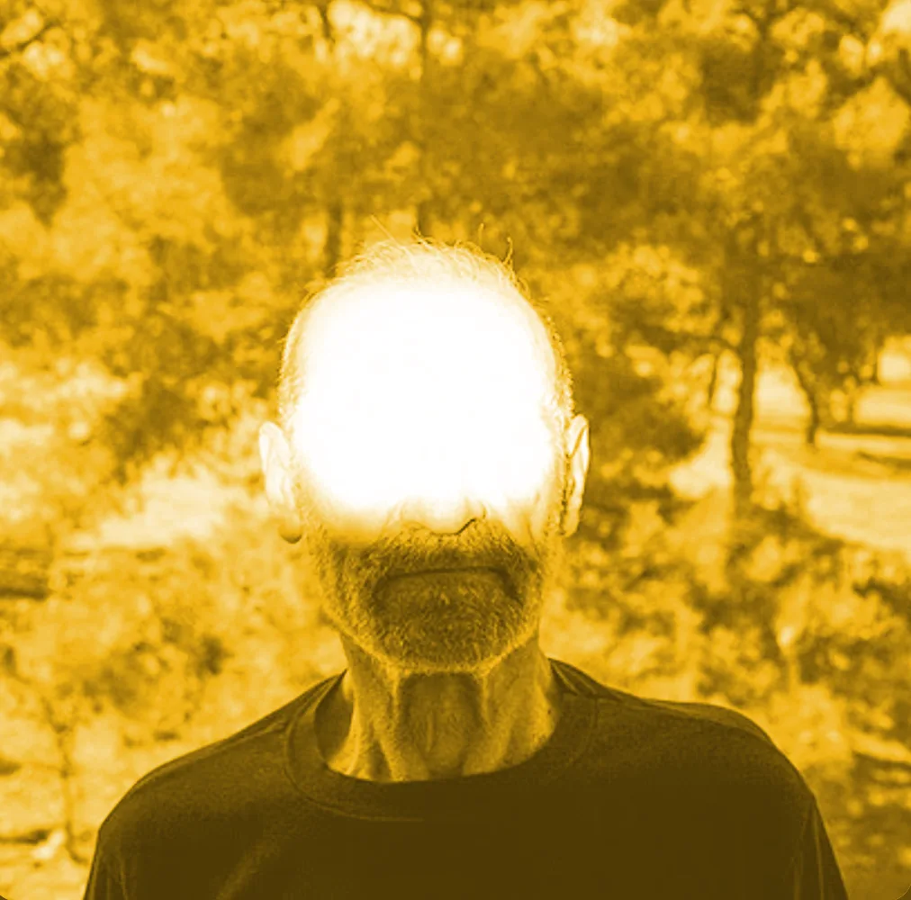

"11 sokakta dolaşan siren, ahşap yangın merdiveninden inen.."
Alan Turing'in vizyonu...
Kuşlar beni sana hatırlatırsa
Nolur ihmal etme dinlemeyi
Yollar seni bana çıkarıyorsa
Koş git en uzağa, yok sevme beni
Kafamda bin düşüncenin ayak sesi...
"HİÇBİR BÜYÜK BAŞARI FEDAKARLIK OLMADAN GELMEZ" ANCAK TABİİ NORMAL ÜLKELERDE
Bu söz hakkında kendi yorumunuzu buraya ekleyebilirsiniz...
HAYKO CEPKIN
STADYUM PLAYLISTPersonal Logs
Stadyum konseri hissi bambaşka. O devasa kalabalıkla kurulan bağ, şarkıların arasındaki o özel muhabbetler ve sahnedeki enerji... Keşke o anlardan birinde ben de orada olsaydım. 🎶✨
Dünya fani, ölüm ani.. Nefesimiz yettiğince direnenlerden olma şanslılığının sürmesi dileklerimle
Evde bastığı herife tez dışarı çıkma şansı veren adam gibi adam 🤘🏻
Altı üstü 5 metreydi...
Suratığınnnn iğğğrennnnçç🤘🏻
Ağır ölür beden, arama, yoktur neden diyor kendileri.. cidden kafayı kırmış herif. 2. ve 3. kayıtta bertaraf ve zaman geçti ile bitirmesi nasıl bir müzikal manyaklığın içerisinde olduğunu ispatlıyor, buradaysan kafa ayarında bir problem vardır, dinle!!
İlber hocanın "cahil cahil konuşup sinirimi bozma" repliğinin, Celal hocanın "senin cahilliğin (bana göre cehalet kelimesi daha uygun buraya) beni etkiliyor" kitabının şarkı yapılmış hali işte..
Yok aga beklemezler.. Ha biz hoşçakal der gideriz o ayrı..
Dertlerin şaha kalmadığı gün mü var?
Başyapıt.. 2:12'deki sth like vocal için saygı duruşu lütfen..
"Tüm bu olup bitenlerin anlamı sensin. Sebebini bilmediğin başlangıcın, sebebi olmayan finalini de göreceksin. Ne sen ne ben, farkına varmadan farkına varabiliyor isen tadına varabileceğin tek şey zaman.. Zaman, bir geri sayım⏲"
"Şer ile olan ortaklıkta saflığını her kul kaybetti".. Doğru. Ancak bunu algılayabilecek olgunluktayım (2026) sanırım.
Bu aşk kitabının yazanını gerçekten.. Parça girişi müzikal olarak diğerleri kadar sarmasa da nakarat ve içerikle kurtarıyor günü..
"Ne yalan söyleyeyim, balık olsaydım da bir deniz kenarında yatsaydım keşke. 2:08'deki "Hürriyet sandık sevgiyi.." sözünden sonra “Hoppala! İşte şimdi sözler yerine müzik konuşsun!” diyerek müziğe bırakmak, bu albümün taçlandıran finali.." olarak tamamladı code agent...
Benzer kafalarla yapılmış cenaze merasiminde çalınmasını isteyebileceğin iki parça, no kidding!!
İlk nakarata girerken yaptığı zencyo gırtlağını fark eden arkadaşa da selam olsun, kulak var sende
Şarkının hikayesini öğrendiğimde hala varlığın mevcuttu, derya denizler gibi dalgalanma kısmında kaldım durulamadım.. Bilemedin kıymetimi, hayat bizi s..ti!
Son yükmeleri yapmadan hafif dinlendirmek istemiş abimiz
Bu parçada geç kaldım derken pişmanlığını değil minnetini dile getiriyor ki bunu ağzım laf yapmaz iken nereden hak ettim seni lafından anlıyoruz.
Gerçek olmalı bu kadar sevip, sevilmesi.. Bir bizi bulmadı aynısı diye iç geçirmekle harcanan zaman..
Sizi (herkesi) görüp, gülüp gidiyorum..
DERDİN(M)İZİ S...
Bir şarkının her versiyonu mu bu kadar mı güzel olur? Elim direkt parçanın diğer versiyonlarını buraya eklemeye gittiğine göre..
...
Sadece 6km koştuktan sonra değil her zaman dinlenecek parça çünkü mental olarak sürekli -athlon halindeyiz
Bir insan hem sevdiği kadına, hem annesine şarkı yapabiliyor, bunu milyonlara dinletebiliyor, hakkında ne yazabileceğim hakkında kafamı karıştırabiliyorsa bu müzikalite ile dans etmeli
Belki bu albümde en çok beğendiğim parçalardan biri olarak nitelendirdiğim parça.. Belki en iyisi.. Hard rock/brutal vokallerin tasavvuf ile harmanlanmış hali. Duyduğunuz en son "tamam" nereden geldiği belli gibi, O da kabul etmiş görünüyor
Parça hakkında yorum yapabilecek entellektüel birikime sahip olduğumu düşünmüyorum. Söylediğim gibi, gücümüz yettiğince direnmeye devam
Kafasını yakalayamadığım parçalardan..
"Bu albümden "Sarı Çizmeli Mehmet Ağa" Kurban ve daha sonra Nev tarafından, "Aynalı Kemer" Ayna tarafından, "Anlıyorsun Değil mi?" ise Teoman (Wiki'nin Hayko'dan haberi yoktur) tarafından yeniden yorumlanmışlardır. Bu üç şarkı Mançoloji albümünde yeni düzenlemeleriyle bu albümü temsil etmektedirler.""
Parça sonu..
Çok güvenli değil ama düşmemek için tutun bana? Ne?
Seen it shadows..
Let's face it
Robbery rising
We're all bad all, bad all faces
We're all beaten
We've seen anybody rise at
We're all the rise at
We're all the
We're all the passion
We're all the bad seeds
We're all bad all, bad all faces
We're all beaten
We've seen anybody rise at/p>
We're all the rise at!!!!!!!!
REQUIEM IN D MINOR, (MASS NO. 19)
K. 626: III. Sequenz VI. LacrimosaPersonal Logs
Manyak manyak işler..
PUNK*ART
KAR KAPLARPersonal Logs
Manyak manyak işlerden birisi daha.. 2010'da yapmış, şaka gibi..
Personal Logs
V E R!